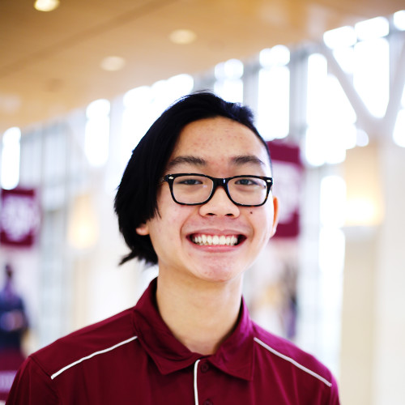

Thanh "Brandon" Tran
Software Engineer
Hello and welcome to my personal website! My name is Thanh Tran but most people call me Brandon. I graduated with the class of 2021 with a degree in Biomedical Engineer from Texas A&M. During my undergrad, I discovered my love of programming. I am particular interested in data science and machine learning has become a fun hobby I partate in. I've also been learning web development and made the website you reading this on right now. I am currently looking for a role as a software developer.
Featured Projects
Here are some of the projects I've worked on. More information can be found at github.com/thanhbrandon.
Moblie App for a Biofeedback Game
My team created a device that would use EMG signals in combination with a moblie app that would bring biofeedback therapy into patients homes. I developed the app in the Flutter language along with another team member.
View the source codeALS Real-Time Translator
I took a machine learning course during my senior year and for the final project we were free to do whatever we wished. I wanted to learn more about computer vision, so another classmate and I created a program that would translate the first 5 letters of ALS using a webcam in real-time
View the source codeReusable Thermo Sterile Indicator
I participated in Aggies Invent Vetmed event. My team was task with inventing a solution to make disposable sterilization test strips reusable. We invented a indicator that would use the metalic properties of thermal expansion that won us 2nd place in the competition.
View videoWork Experience
PC Repair Technician
CSAT Solutions
May, 2021 - Present
Using my knowlege of computer hardware and troubleshooting, I currently work as a PC Repair Technician.
- Review customers complaints to determine details of equipment problems
- Disassembled machines to examine parts, for wear or defects, using hand or power tools and measuring devices
- Advises customer call center concerning equipment operation, maintenance, or requests approval for advanced repair
Education
Texas A&M University - College Station
Biomedical Engineering, Class of 2021
Involved in:
- TAMU VSA
- Chem-E Car
- TAMU SASE